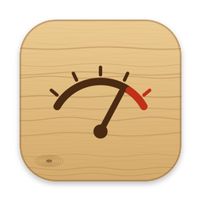

PlugPlug sits between your apps and your speakers. Pick everything or just the apps you want, run them through any Audio Unit effect on your Mac, and send the result to the output you choose.
Free. Needs macOS 14.2 or later.
Drag the knob up or down. The bent tack marks 0 dB, and above it Plug boosts up to +10 dB, just like the real one.
Process everything, or tick only the apps you want. The rest play normally.
Apple's built-in effects and your third-party plugins, each with its own controls window.
Drag effects into order and bypass any of them without losing its settings.
From silence to +10 dB, with 0 dB marked by a bent tack. Link it to a MIDI knob in two clicks.
Save the whole setup (input, apps, output, effects and level) and switch in one click.
Start, stop and set the level from the Dock icon or the menu bar, where you can also add your own buttons that send MIDI, run scripts and Shortcuts, or ask Claude.